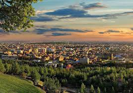

Herat
- Historical Significance
- Economic and Stratigic location
- Cultural and Educational center

Nuristan
- Unique Ethnic and cultural identity
- Remot and Mountainous Terrain
- Rich in Natural Resources
Term of services and privacy